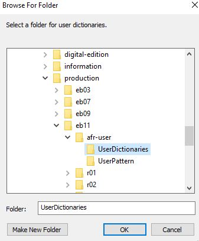

Areas and Text Tab
Settings for the Areas and Text tab in the ABBYY FineReader Options window.
Before you begin
To access the Options windown, select .
Procedure
-
Check all options for Verification settings.

-
ABBYY FineReader needs to know where the shared user
dictionary is located. Open the User dictionaries...
window. Select English (United States) and use the
Browse... button to navigate to the
afr-user/UserDictionaries folder for the edition you
are working on. for example, if you are scanning eb11, the dictionaries are
located in production/eb11/afr-user/UserDictionaries.

- Click OK when finished, to save all settings in the Options window.